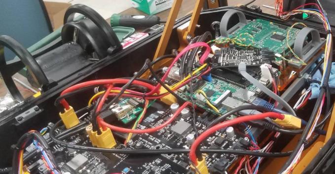
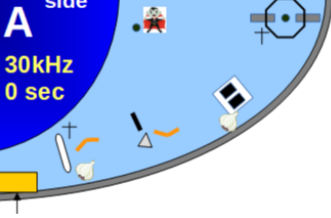

Caltech Robotics
Software
The software team is responsible for writing all the code that runs on the sub. Generally, our projects fall within these four main categories:
Hardware
The hardware code communicates with electrical boards created by the EE subteam. This code often does not change much unless the electrical
team updates the board designs.
Mobility and Sensor Fusion
The mobility code deals with how to move the robot, for example, by controlling the thrusters.
The EKF (Extended Kalman Filter)
falls into the sensor fusion category, as it takes measurements from various sensors such as the DVL, hydrophones, and accelerometers to obtain an estimate of the sub’s
location.
Vision
For the vision component, we use a combination of an ML detector (YOLO CNN) with more traditional feature detectors to identify objects of interest.
The YOLO CNN is trained using images from the TRANSDEC as well as pictures from tests in the Caltech pool. It is used for identifying more complex shapes or objects (such
as the vampires from the 2019 competition) and to supplement traditional detectors if needed.
Traditional feature detectors try to identify objects by isolating colors using hue-masking or adaptive thresholding. Contours are validated using aspect ratio, object area, and other checks. These typically do not involve any machine learning and are good projects for new members.
Commanders
Commanders contain the logic of the robot. They determine how to interact with detected objects (pickups, approaches, following), how to move around the course, when to give
up on a task, etc.
Most of our work falls within the vision and commander categories in response to the changing themes and tasks of the RoboSub competition. New members typically work on these specific projects because they are relatively straightforward and easy to get started with. More experienced members usually take on more general tasks such as EKF improvements, which require more math background and a better understanding of the codebase.
2020-2021
Since the competition was virtual this year, there were no specific tasks to prepare for. We used this as an opportunity to focus on more general projects that would improve the overall performance of the sub. The main focuses were:

EKF Improvements
This year, we have begun work to better handle orientation updates. Handling predictions of orientation properly while avoiding gimbal lock requires using quaternions in the sub dynamics. To properly handle linearization of quaternion operations, we are in the process of a significant reformulation of the EKF itself.
Stereo Vision
Our sub has two cameras, though of two different types: one is wide angle/fisheye and the other has a narrower field of view). We wanted to see if it was possible to undistort the images from each camera and combine them to produce an effect similar to stereo vision, which would help with depth perception. Using two different cameras did not yield promising results, but if we have two cameras of the same type in the future, stereo vision may be helpful.
ArUco Markers
ArUco markers are square binary fiducial markers that are often used to assist in pose estimation. They contain enough information to obtain camera orientation and angle from a detection. Using ArUco markers, we can separate the tasks of writing detectors from writing commanders. Instead of waiting for a functioning detector to be created before getting started on the commander as we did in the past, we can now place an ArUco marker on the object and use the ArUco marker detector to get reliable detections of its position. This would allow us to develop and test the commander in parallel with work done on the detector.
Color Segmentation
For traditional detectors, we usually use HSV or RGB filtering to identify objects with colors of interest. For example, we use a red and orange HSV mask to find the gate underwater. However, this approach is sensitive to lighting and water conditions and can fail during competition where the environment is very different from the Caltech pool where we test our detectors. To make our detections more robust, we trained a deep neural network to do color segmentation.
Keypoint Estimation
Using our current ML detectors, we only get an overall bounding box around objects. However, for tasks such as torpedo shooting, buoy, and gripper tasks, we need to precisely align with the prop before interacting with it. In these situations, it would be useful to know the actual orientation of the object. Keypoint estimation allows us to locate the corners of the object, helping us determine our relative pose more accurately.